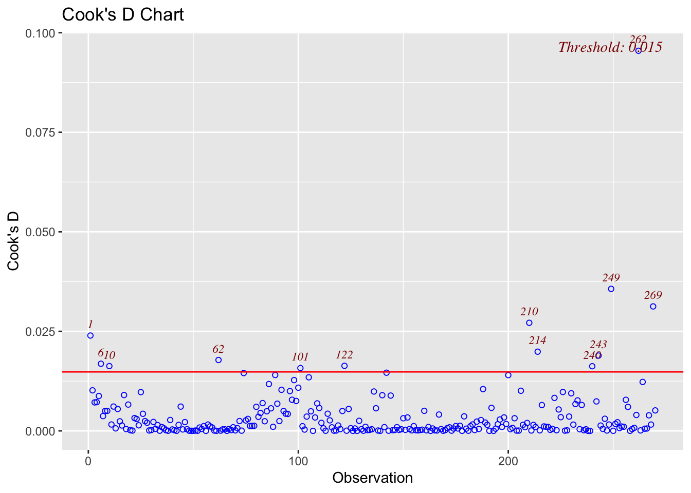
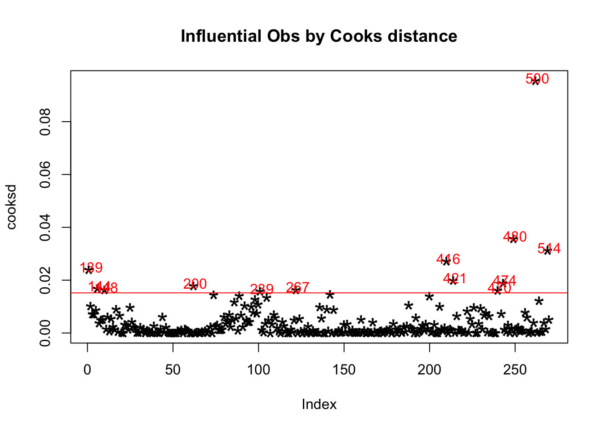
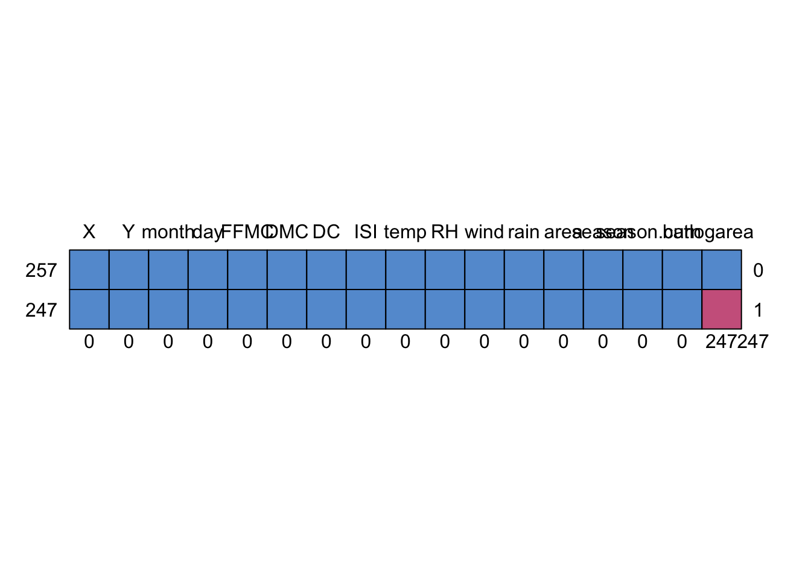

Data
Forest Fire
# Add season category
fire <- read.csv("forestfires.csv", header=TRUE, sep = ",")
fire$season <- rep("spring", 517)
for (i in 1:517){
if (fire$month[i] %in% c("feb","jan","dec")) fire$season[i] <- "winter"
if (fire$month[i] %in% c("oct","nov","sep")) fire$season[i] <- "autumn"
if (fire$month[i] %in% c("aug","jul","jun")) fire$season[i] <- "summer"
}
fire$season <- as.factor(fire$season)
fire$season.cat <- rep(0, 517)
for (i in 1:517){
if (fire$season[i] == "summer") {
fire$season.cat[i] <- 1
}
if (fire$season[i] == "autumn") {
fire$season.cat[i] <- 2
}
if (fire$season[i] =="winter") {
fire$season.cat[i] <- 3
}
}
head(fire)## X Y month day FFMC DMC DC ISI temp RH wind rain area season season.cat
## 1 7 5 mar fri 86.2 26.2 94.3 5.1 8.2 51 6.7 0.0 0 spring 0
## 2 7 4 oct tue 90.6 35.4 669.1 6.7 18.0 33 0.9 0.0 0 autumn 2
## 3 7 4 oct sat 90.6 43.7 686.9 6.7 14.6 33 1.3 0.0 0 autumn 2
## 4 8 6 mar fri 91.7 33.3 77.5 9.0 8.3 97 4.0 0.2 0 spring 0
## 5 8 6 mar sun 89.3 51.3 102.2 9.6 11.4 99 1.8 0.0 0 spring 0
## 6 8 6 aug sun 92.3 85.3 488.0 14.7 22.2 29 5.4 0.0 0 summer 1# Area log transformation (for area>0)
hist(fire$area,40, main = "Histogram of area", xlab = "Area")
fire["logarea"] <- ifelse(fire$area >0, log(fire$area), NA)
ggplot(data=fire, aes(x=logarea))+
geom_histogram(aes(y=..density..), col="black",fill="white")+
stat_function(fun=dnorm, args = list(mean=mean(fire$logarea, na.rm = TRUE), sd = sd(fire$logarea, na.rm=TRUE)),col="red")## `stat_bin()` using `bins = 30`. Pick better value with `binwidth`.## Warning: Removed 247 rows containing non-finite values (stat_bin).
Linear Regression Analysis
# Outliers
ols_plot_cooksd_chart(mod_lin) #number 262 datapoint in this data set, which is id=500
ols_plot_resid_lev(mod_lin)
`
cooksd <- cooks.distance(mod_lin)
plot(cooksd, pch="*", cex=2, main="Influential Obs by Cooks distance") # plot cook's distance
abline(h = 4*mean(cooksd, na.rm=T), col="red") # add cutoff line
text(x=1:length(cooksd)+1, y=cooksd+0.001, labels=ifelse(cooksd>4*mean(cooksd, na.rm=T),names(cooksd),""), col="red")
# Get rid off the outliers
influential = which(cooksd>4*mean(cooksd, na.rm=T)) # influential points
area_posit[influential, ] #all data for influential points## X Y month day FFMC DMC DC ISI temp RH wind rain area season
## 139 9 9 jul tue 85.8 48.3 313.4 3.9 18.0 42 2.7 0.0 0.36 summer
## 144 1 2 jul sat 90.0 51.3 296.3 8.7 16.6 53 5.4 0.0 0.71 summer
## 148 8 3 sep tue 84.4 73.4 671.9 3.2 24.2 28 3.6 0.0 0.96 autumn
## 200 2 4 sep mon 63.5 70.8 665.3 0.8 22.6 38 3.6 0.0 11.32 autumn
## 239 6 5 sep sat 92.5 121.1 674.4 8.6 25.1 27 4.0 0.0 1090.84 autumn
## 267 6 5 aug tue 94.3 131.7 607.1 22.7 19.4 55 4.0 0.0 0.17 summer
## 416 8 6 aug thu 94.8 222.4 698.6 13.9 27.5 27 4.9 0.0 746.28 summer
## 421 8 8 aug wed 91.7 191.4 635.9 7.8 26.2 36 4.5 0.0 185.76 summer
## 470 6 3 apr sun 91.0 14.6 25.6 12.3 13.7 33 9.4 0.0 61.13 spring
## 474 9 4 jun sat 90.5 61.1 252.6 9.4 24.5 50 3.1 0.0 70.32 summer
## 480 7 4 jul mon 89.2 103.9 431.6 6.4 22.6 57 4.9 0.0 278.53 summer
## 500 7 5 aug tue 96.1 181.1 671.2 14.3 27.3 63 4.9 6.4 10.82 summer
## 514 2 4 aug sun 81.6 56.7 665.6 1.9 21.9 71 5.8 0.0 54.29 summer
## season.cat logarea
## 139 1 -1.02165125
## 144 1 -0.34249031
## 148 2 -0.04082199
## 200 2 2.42657107
## 239 2 6.99470332
## 267 1 -1.77195684
## 416 1 6.61510086
## 421 1 5.22445552
## 470 0 4.11300274
## 474 1 4.25305625
## 480 1 5.62952577
## 500 1 2.38139627
## 514 1 3.99434005dat <- area_posit[-influential,] #get rid off the influential points
head(dat)## X Y month day FFMC DMC DC ISI temp RH wind rain area season
## 140 1 4 sep tue 91.0 129.5 692.6 7.0 21.7 38 2.2 0 0.43 autumn
## 141 2 5 sep mon 90.9 126.5 686.5 7.0 21.9 39 1.8 0 0.47 autumn
## 142 1 2 aug wed 95.5 99.9 513.3 13.2 23.3 31 4.5 0 0.55 summer
## 143 8 6 aug fri 90.1 108.0 529.8 12.5 21.2 51 8.9 0 0.61 summer
## 145 2 5 aug wed 95.5 99.9 513.3 13.2 23.8 32 5.4 0 0.77 summer
## 146 6 5 aug thu 95.2 131.7 578.8 10.4 27.4 22 4.0 0 0.90 summer
## season.cat logarea
## 140 2 -0.8439701
## 141 2 -0.7550226
## 142 1 -0.5978370
## 143 1 -0.4942963
## 145 1 -0.2613648
## 146 1 -0.1053605New complete dataset
new_dat <- rbind(fire[which(fire$area==0),], dat) #join the area_positive w/o influential points to the data w/ area=0
new_dat$burn <- ifelse(new_dat$area==0,0,1) #to get the new dataset without the influential points
head(new_dat)## X Y month day FFMC DMC DC ISI temp RH wind rain area season season.cat
## 1 7 5 mar fri 86.2 26.2 94.3 5.1 8.2 51 6.7 0.0 0 spring 0
## 2 7 4 oct tue 90.6 35.4 669.1 6.7 18.0 33 0.9 0.0 0 autumn 2
## 3 7 4 oct sat 90.6 43.7 686.9 6.7 14.6 33 1.3 0.0 0 autumn 2
## 4 8 6 mar fri 91.7 33.3 77.5 9.0 8.3 97 4.0 0.2 0 spring 0
## 5 8 6 mar sun 89.3 51.3 102.2 9.6 11.4 99 1.8 0.0 0 spring 0
## 6 8 6 aug sun 92.3 85.3 488.0 14.7 22.2 29 5.4 0.0 0 summer 1
## logarea burn
## 1 NA 0
## 2 NA 0
## 3 NA 0
## 4 NA 0
## 5 NA 0
## 6 NA 0md.pattern(new_dat)
## X Y month day FFMC DMC DC ISI temp RH wind rain area season season.cat burn
## 257 1 1 1 1 1 1 1 1 1 1 1 1 1 1 1 1
## 247 1 1 1 1 1 1 1 1 1 1 1 1 1 1 1 1
## 0 0 0 0 0 0 0 0 0 0 0 0 0 0 0 0
## logarea
## 257 1 0
## 247 0 1
## 247 247